SQL Server 2014的下载和安装教程
网园资讯工作室 编程部 2017/10/24
SQL Server 2014的下载
下载之前一定要先弄清楚自己电脑的系统是32位的还是64位的，32位的系统是无法安装64位软件的。在桌面右击“此电脑”，选择“属性”。在弹出的系统信息界面中可以看到自己的系统是多少位。

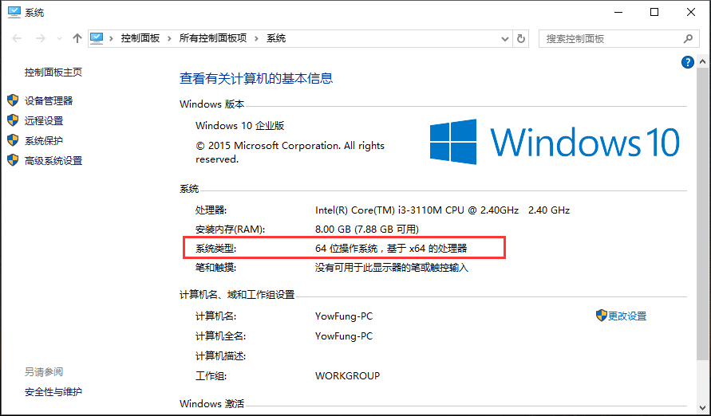
以下提供多种SQLServer 2014的下载途径，请选择跟自己电脑系统对应位数（32位或64位）的版本，不要下错。
下载方式1：在Q群文件里下载
下载方式2：拿U盘到网园（黎灿308）来拷贝
下载方式3：迅雷下载（点击下载32位版 | 点击下载64位版）
下载方式4：百度网盘下载
注：若想要其他版本的SQL Server，可以到 MSDN,我告诉你这里去下载。电脑配置好点的可以下载2016版或2017版。不同版本的SQL Server安装步骤可能不同，但总体是差不多的，故在此不作详细介绍，此教程仅针对2014版的。另外，由于我们课程用的是2014版，所以如果你对这个软件不熟悉的话，不建议使用其他版本的。
SQL Server 2014的安装（以64位为例）
打开下载目录，找到刚刚下载的SQL Server 2014安装镜像（.iso文件），点击右键，然后加载至虚拟光驱。（如果是U盘拷贝的，请先复制到电脑上再加载至虚拟光驱。）
ps：如果右键没有
加载虚拟光驱或装载这些选项，可以下载安装”好压“这个软件，好压自带有加载至虚拟光驱的功能。或者直接用压缩工具解压出来再安装也可以（可能解压时间会比较久）。
加载成功后，打开“此电脑”，可以看到出现了SQL Server 2014的安装光盘，打开光盘，找到
setup.exe并双击打开。
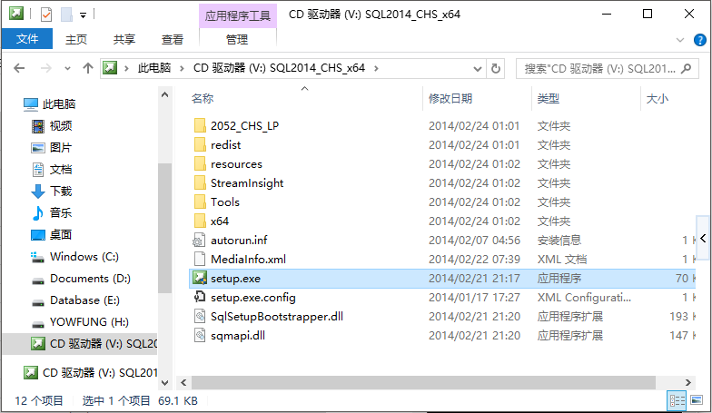
运行安装程序后，出现以下界面，在左边点击
安装，然后右边点击全新SQL Server独立安装或向现有安装添加功能。ps: 若安装程序无法运行，可尝试临时关闭防火墙和杀毒软件，然后再重试！

接着出现"产品密钥"界面，这里已经默认填好了密钥，不需更改，直接点
下一步。
接下来是"许可条款"界面，勾选
我接受许可条款，然后下一步。
正在进行规则检查，如果此过程出现报错，则必须更正所有失败，安装程序才能继续。
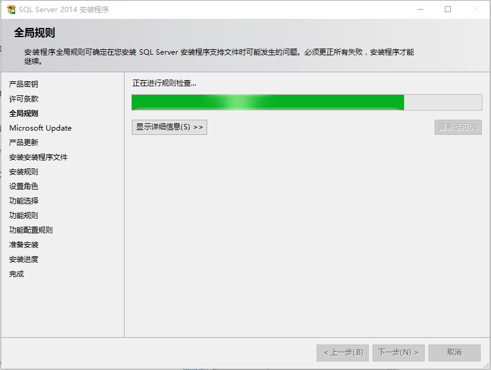
全局规则检查没有问题后，出现以下的"Microsoft Update"界面，此处不勾选检查更新，直接
下一步。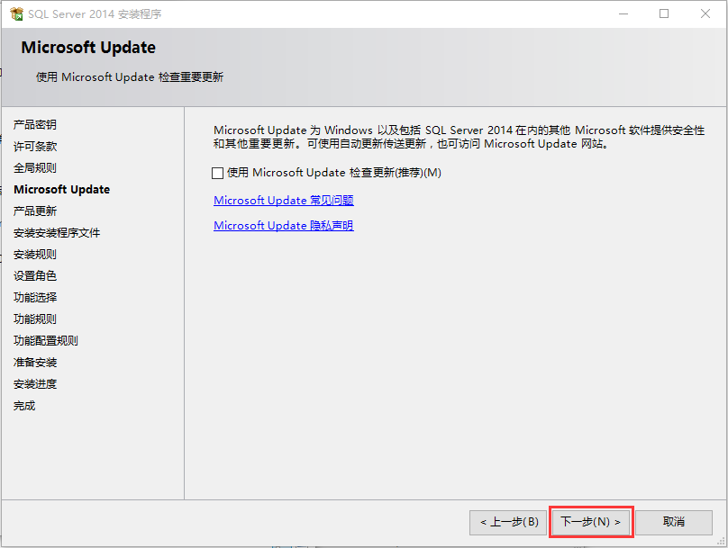
接着是"产品更新"界面，这里我们不进行产品更新，点击
跳过扫描，出现下面的“安装安装程序文件”界面时点击下一步。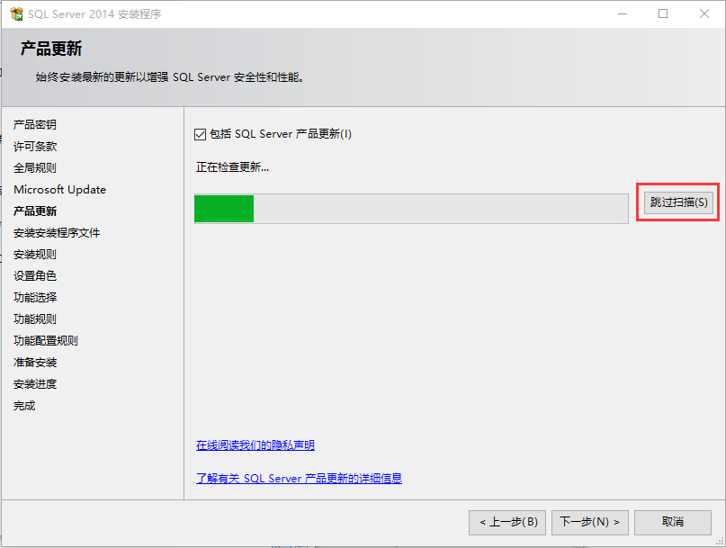

在下面的“安装规则”界面中，必须更正所有失败，安装程序才能继续。

在“设置角色”界面，选择
SQL Server功能安装，然后下一步。
在“功能选择”这里点击
全选，然后根据自己的实际情况选择实例根目录（注意，必须是英文路径），然后下一步。
"实例配置"界面这里选择
默认实例，然后下一步。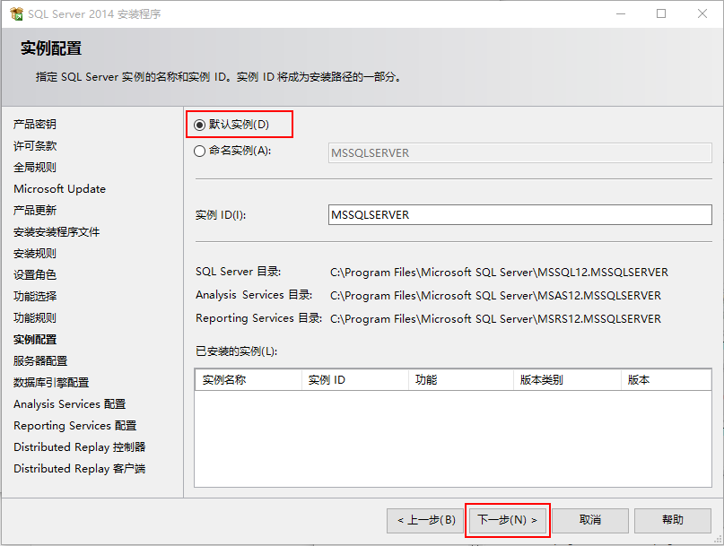
"服务器配置"这里不需要我们更改，保持默认并
下一步。
“数据库引擎配置”这里是重点啦！顶部有三个选项，点选择
服务器配置，然后中间那里选择混合模式，并设置一个SQLServer系统管理员密码。接着下面指定SQL Server管理员，点击添加当前用户，此时列表中会出现当前的用户，先不要点下一步。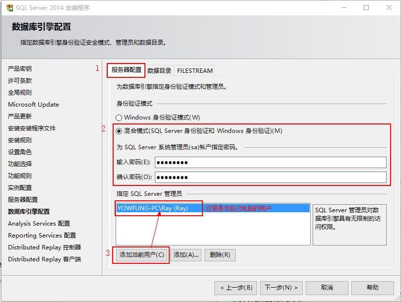
继续刚才那个界面，现在点击顶部的
数据目录，在这里你可以自己设置数据根目录等，建议保持默认不作修改，“FILESREAM”这里不需要更改，直接点下一步。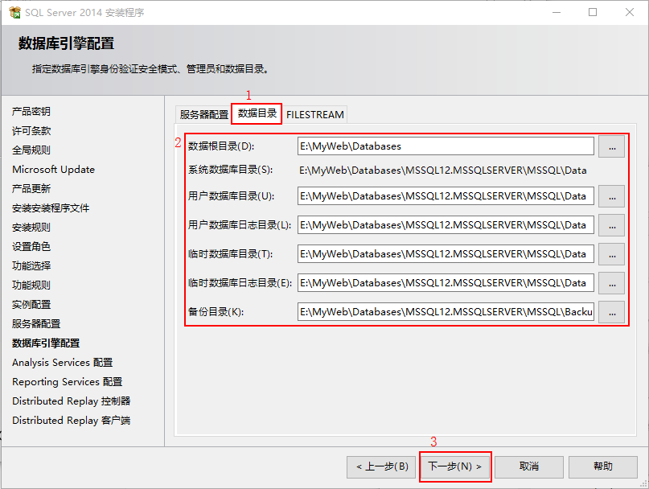
接下来是“Analysis Services”界面，这里有三个选项，顶部这里先选择
服务器配置，服务器模式选择多维和数据挖掘模式，在下面的管理权限中点击添加当前用户，此时列表中会出现你电脑的当前用户，设置好之后不要点下一步。
还是刚刚那个界面，现在顶部选择
数据目录，在这里你可以修改数据目录、日志文件目录、Temp目录、备份目录，建议保持默认不修改，然后下一步。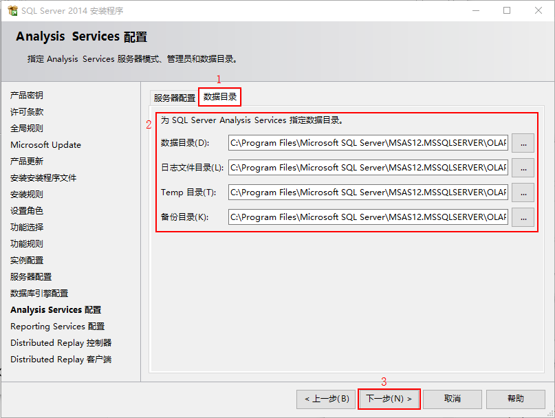
“Reporting Services配置”界面中我们按下图所示进行选择，然后
下一步。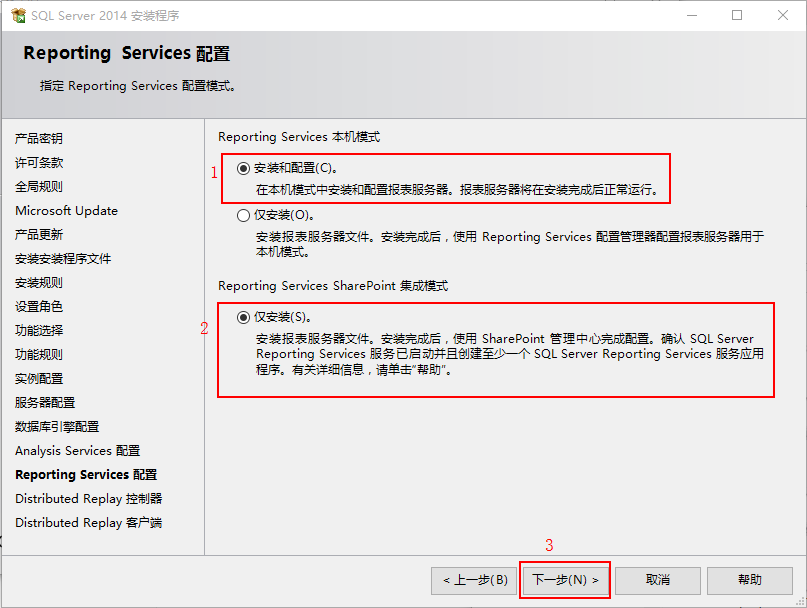
接下来的“Distributed Replay控制器”界面中同样也是点击
添加当前用户，此时列表中会出现你电脑的当前用户，然后下一步。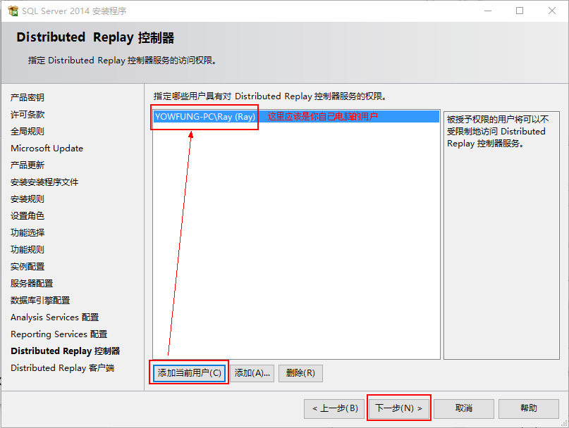
“Distributed Replay客户端”界面不需要做任何修改，
下一步。
到了现在，安装前所有的准备工作都已经做好了，现在可以点击
安装按钮开始安装了。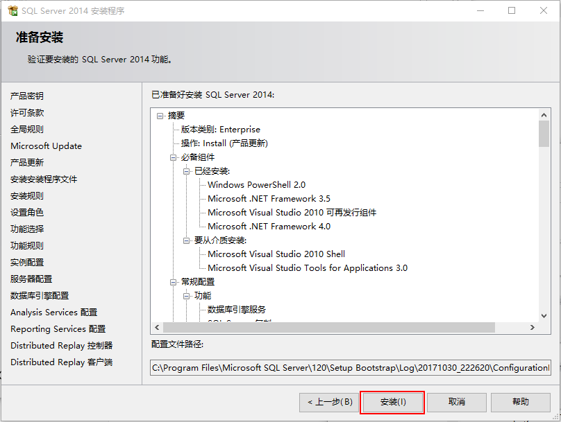
正在安装中，这是一个漫长的过程......
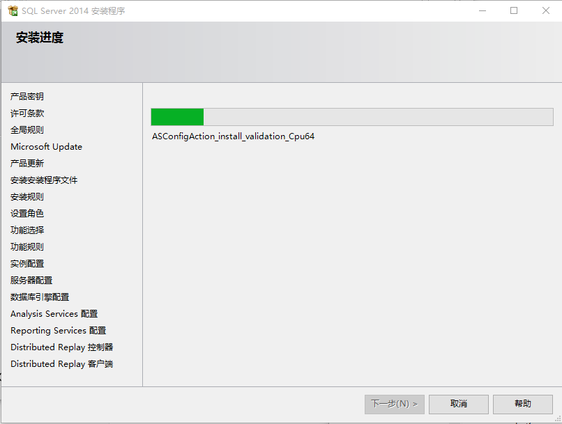
安装成功，此时可以在列表中看到
成功状态，点击关闭。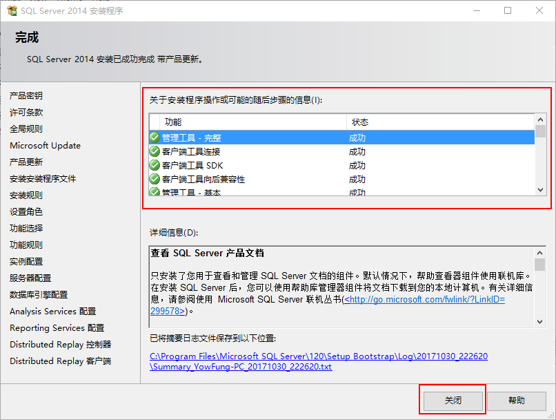
现在，最开始的这个窗口也可以关闭掉了。至此SQL Server 2014的安装就完成了。
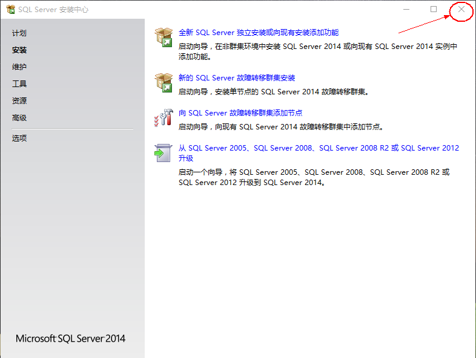
安装完成后，默认在桌面是没有图标的。可以按下键盘的
Win+S，输入SQL...，此时会出现一个SQL Server2014 Management Studio，点击它就可以打开SQL数据库管理界面了。或者也可以点击开始菜单，在所有程序里也可以找到。
打开SQL Server 2014 Management Studio之后就是这样的界面。